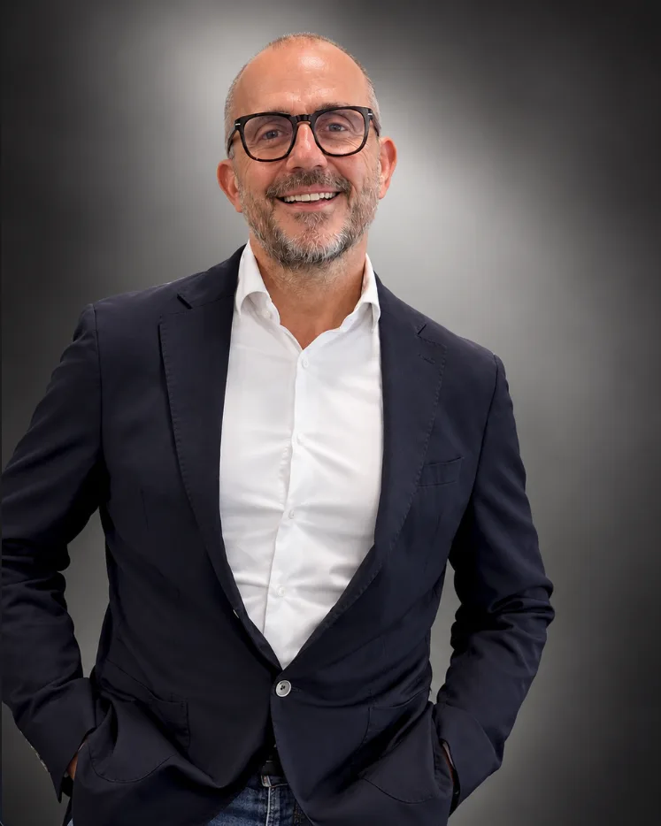

Depuis 2023 · Lyon
L’IA au service de vos équipes, pas l’inverse.
Pierre Artru accompagne les dirigeants de PME : un audit chiffré, une formation qui fait repérer les cas d’usage, des agents hébergés en France. Du concret, du mesurable, de l’humain.

20+ ans à la direction d’agencesPierre Artru
Fondateur d’Artru Consulting
J’ai dirigé pendant plus de vingt ans des agences au sein du groupe Altavia. Croissance, rentabilité, management, transformation : j’ai connu les arbitrages d’un dirigeant, avec leurs doutes.
En 2023, j’ai fondé Artru Consulting pour aider les entreprises à adopter l’IA sans perdre ce qui fait leur force : leurs équipes.
Je suis formateur certifié PCM®. Comprendre comment chacun communique et se motive change la façon d’embarquer une équipe dans un changement. L’IA ne réussit que si les gens la prennent en main.
Avant les affaires, il y a eu le terrain : cinq fois champion de France de hockey sur gazon avec le Football Club de Lyon. Le sport d’équipe m’a appris qu’on gagne avec un collectif, un entraînement régulier et un plan de jeu partagé. Je l’applique aujourd’hui avec les équipes que j’accompagne.
Ma conviction tient en une ligne : Humain × Technologie = Valeur.
- 20+ ansde direction d’entreprise
- 2023création d’Artru Consulting
- Qualiopiorganisme de formation certifié depuis août 2025
- 5 titresde champion de France de hockey sur gazon avec le Football Club de Lyon
- Lyon et AuRAAuvergne-Rhône-Alpes
Voir le certificat Qualiopi (actions de formation, déclaration d’activité n° 84 69 25063 69).
Pourquoi Artru Consulting
L’IA est souvent mal comprise. On voit de belles démonstrations, puis plus rien. Dans une PME, ce qui compte, c’est ce qui sert vraiment, ce que les équipes adoptent, et ce qu’on peut mesurer.
Mon rôle : relier la décision du dirigeant à l’usage de tous les jours, sans jargon et sans promesse magique.
Ce que nous faisons
- Un audit qui chiffre ce que l’IA peut vous rendre, métier par métier.
- Des formations certifiées Qualiopi où vos équipes repèrent et priorisent leurs cas d’usage.
- Des agents installés dans vos outils, hébergés en France, maintenus pour vous.
Ce que nous ne faisons pas
- Vendre des démonstrations sans suite.
- Annoncer des gains sans méthode pour les mesurer.
- Installer un agent sans validation humaine.
- Remplacer vos équipes par des machines.
Notre manière de travailler, en trois temps
-
Diagnostic et découverte
Comprendre l’IA sans jargon, repérer les tâches à automatiser, évaluer les gains possibles.
PACk Audit -
Ateliers « Et si l’IA pouvait… »
Par métier, vos équipes imaginent, construisent et testent des cas d’usage. On repère vos ambassadeurs.
PACk Formation -
Mise en action et quick wins
Un cas d’usage pilote déployé, des ambassadeurs formés, l’impact mesuré.
PACk Agents
Les packs s’achètent séparément.
Trois principes portent cette méthode : l’IA au service de l’humain et non l’inverse, des gains mesurables dès le premier mois, une adoption durable avec des équipes engagées. Avec un angle propre : IA et intelligence émotionnelle.
Cadre de confiance
- Organisme de formation certifié Qualiopi (actions de formation).
- Hébergement en France, respect du RGPD.
- Validation humaine avant toute action sensible, historique des actions conservé.
- Prix, livrables et délais écrits dans le devis.
Parlons de votre PME, 30 minutes.
On regarde votre situation et on vous dit quel pack a du sens, ou aucun.
Réserver 30 minutes